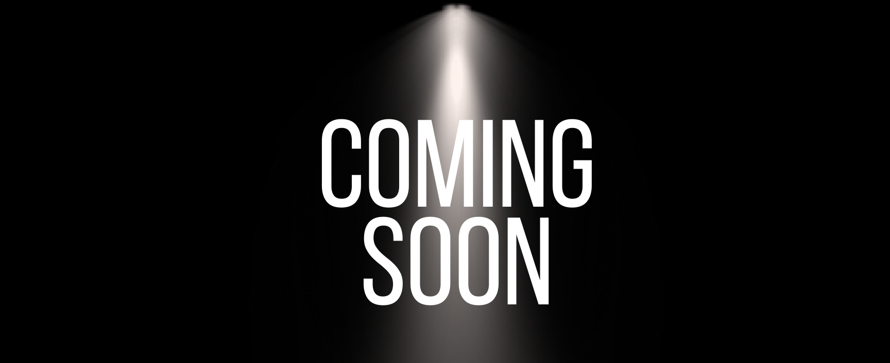

My name is Alyssa Lopez and I am an aspiring web page developer. I recently decided to change career paths but am already putting in the work to follow my new dream. My previous career path was related to law enforcement and as such I have an Associate's Degree in Criminal Justice. Moving back to the present, I am currently participating in Rutger's Coding Boot Camp to learn what I need to know to become a web page developer. Below you will see the projects I have completed while in the program thus far. Before you look at them, let's learn a little more about me outside of work!
My hobbies include crochet, knitting, reading, and playing video games. I love creating things, from stuffed animals to scarves! Meanwhile, I also love the way books enable one to enter another world simply by reading a page. I find that books increase my vocabularly as well as my imagination! Finally, I find playing video games as a great way to learn teamwork, strategy, and communication. They make those three lessons extrememly entertaining to undertake so it is a win win to me!
About Me
My Work

Contact Info.
- 201-551-1297
- amlopezofficial@gmail.com
- GitHub